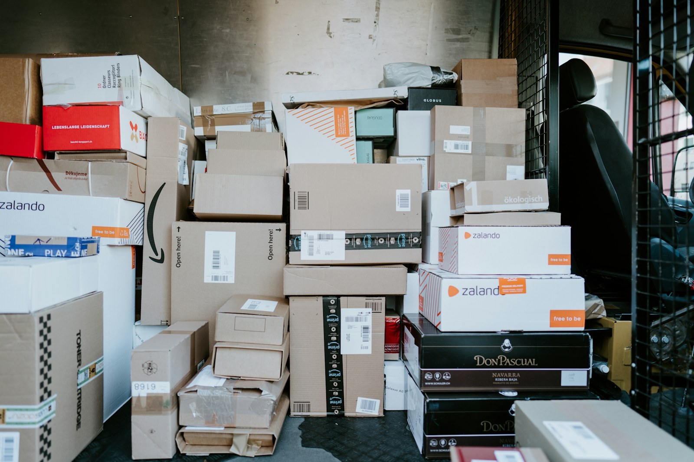

商品資料整理
統一商品描述、規格及渠道所需資訊，減少各環節的理解差異。
商品資料 ／ 渠道營運 ／ 工作銜接
了解商品、渠道與合作方的現況。
列明資訊節點、責任分工與跟進方式。
按工作進度檢查交接狀態，及時調整安排。

商品走向海外市場之前，資訊往往已經經過多次交接。我們把資料準備、平台營運與合作方溝通串成可跟進的工作路徑，協助團隊看清下一步。
Fuxin Business Limited
討論合作依照品牌現況與工作需求，討論適合的協作範圍。
統一商品描述、規格及渠道所需資訊，減少各環節的理解差異。
圍繞上架、內容調整與日常營運事項，建立清楚的跟進安排。
整理訂單與合作方所需的交接內容，明確異常情況的回覆與處理路徑。
具體履約分工需依項目與合作方另行確認，初期會先釐清協作範圍。
可以從資料、內容或跨團隊交接等特定環節展開討論。